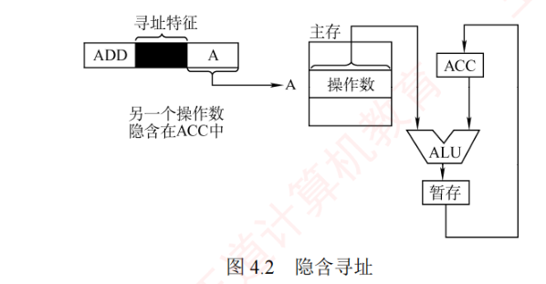
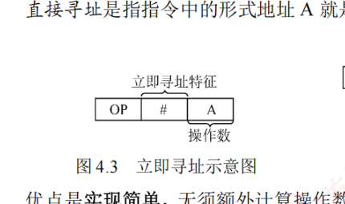
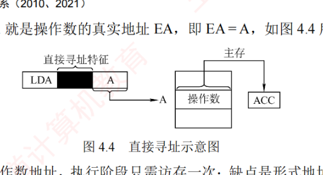
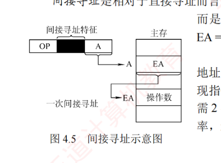
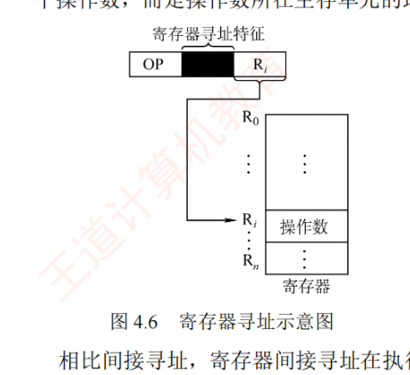
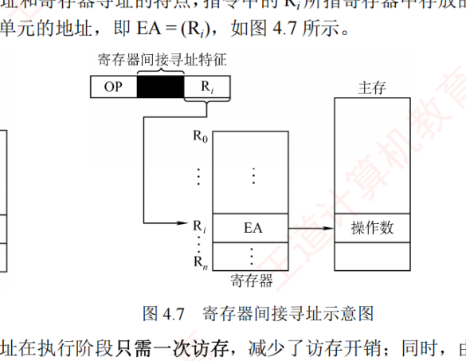
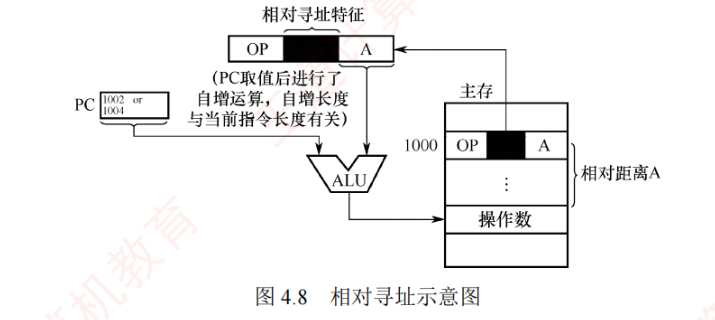
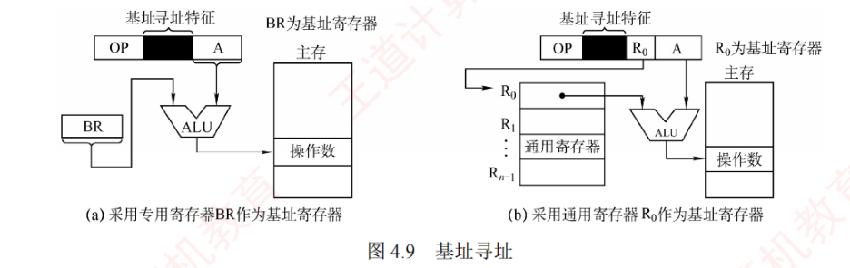
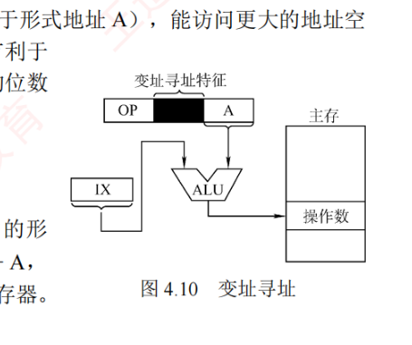

4.2 指令的寻址方式
寻址方式是指确定指令或操作数有效地址的方法，既包括确定下一条待执行指令的地址，也包括确定本条指令操作数的地址。因此寻址方式分为指令寻址和数据寻址两大类。本节要求掌握各种寻址方式的特点及有效地址的计算，三种偏移寻址（相对寻址、基址寻址和变址寻址）的地址计算方法是历年真题的高频命题点，需具备熟练汇编指令的综合答题能力。
4.2.1指令寻址和数据寻址
确定下一条将执行的指令地址称为指令寻址；确定本条指令操作数地址称为数据寻址。
1. 指令寻址
指令寻址有两种方式：顺序寻址和跳跃寻址。
（1）顺序寻址
通过程序计数器（PC）加上当前指令的字节长度，自动形成下一条指令地址。
（2）跳跃寻址
通过转移类指令实现。是否发生转移通常由状态寄存器中的条件决定，转移目标地址由指令给出。转移方式分为：① 绝对转移，地址码直接给出目标地址；② 相对转移，地址码给出相对于当前 PC 的偏移量。无条件转移和条件转移的执行结果都是修改 PC 的值，CPU 随后根据新的 PC 从主存取出下一条指令。
2. 数据寻址
数据寻址是指令在指令中表示计算操作数的地址。为区分不同的寻址方式，指令中通常设有寻址特征字段，其位数决定了可支持的寻址方式种类。典型指令格式如下：
| 操作码 | 寻址特征 | 形式地址 A |
指令中的地址码字段所包含的地址称为形式地址（A），它不代表操作数的真实地址；真实地址通过寻址方式和形式地址计算得到，称为有效地址（EA）。不同寻址方式下 A 的身份不同：
- 若为立即寻址，则形式地址中存放的就是操作数（立即数）本身；
- 若为直接寻址，则形式地址 A 的位数决定了可寻址的存储空间大小；
- 若为寄存器寻址，则形式地址 A 的位数决定了通用寄存器的最大数量；
- 若为寄存器间接寻址，则寄存器的位数决定了可寻址空间的大小。
4.2.2常见的数据寻址方式
1. 隐含寻址
隐含寻址是指指令中不显式给出操作数地址，而将操作数地址隐含在特定寄存器中。例如，在累加器型结构中，单地址指令仅显式指定一个操作数地址，另一个操作数默认来自累加器（ACC），运算结果也通常返回 ACC，如图 4.2 所示。

优点是可有效缩短指令字长；缺点是依赖存储隐含操作数的硬件（如 ACC）。
2. 立即（数）寻址
在立即寻址中，指令的形式地址字段并不是操作数的地址，而是直接存放操作数本身，称为立即数，通常以补码形式表示。如图 4.3 所示，# 表示立即寻址特征，A 即为立即数。

优点是操作数已包含在指令中，执行阶段无须访问存储器，指令执行速度最快；缺点是立即数的大小受限于形式地址字段的位数，寻址范围非常有限。
3. 直接寻址
直接寻址是指令中的形式地址 A 就是操作数的真实地址 EA，即 \(EA = A\)，如图 4.4 所示。

优点是实现简单，无须额外计算操作数地址，执行阶段只需访存一次；缺点是形式地址 A 的位数限制了寻址范围，且地址固定，难以动态修改。
例如，若形式地址字段占 24 位，则直接寻址范围为 \(2^{24} = 16M\)。
4. 间接寻址
间接寻址是相对于直接寻址而言的，指令中的形式地址 A 并不直接给出操作数的有效地址，而是指向一个主存单元，该单元中存放操作数的有效地址，即 \(EA = (A)\)，如图 4.5 所示。

优点是可扩大寻址范围——有效地址 EA 的位数通常大于形式地址 A 的位数（由主存字长决定），并支持地址的动态生成（如实现指针和转移）；缺点是指令在执行阶段需多次访存（一次间接需 2 次访存）。由于访存开销较大，若需兼顾寻址范围与执行效率，通常用寄存器间接寻址。
5. 寄存器寻址
与直接寻址类似，寄存器寻址将操作数存放在指令中给出的寄存器内，指令的地址码段给出的是寄存器的编号，即 \(EA = R_i\)，操作数存在于由 \(R_i\) 指定的寄存器内，如图 4.6 所示。例如，若 CPU 有 32 个通用寄存器，则寄存器编号需 5 位，形式地址字段仅占 5 位即可寻址全部寄存器。

优点是执行阶段无须访存、仅访问寄存器，执行速度快；且因寄存器数量远少于内存单元，地址码位数较少，有助于缩短指令字长；缺点是寄存器成本高，CPU 中可用寄存器数量有限。
6. 寄存器间接寻址
寄存器间接寻址结合了间接寻址和寄存器寻址的特点，指令中 \(R_i\) 所指寄存器中存放的不是操作数，而是操作数所在主存单元的地址，即 \(EA = (R_i)\)，如图 4.7 所示。

相比间接寻址，寄存器间接寻址在执行阶段只需一次访存，减少了访存开销；同时，由于使用寄存器来存放有效地址，其寻址范围不受形式地址字段位数限制，从而扩大了寻址范围。相比寄存器寻址，这种方式在执行阶段需要从主存获取操作数，增加了访存需求。
7. 相对寻址
相对寻址是指将程序计数器（PC）的内容与指令中的形式地址 A 相加，形成转移目标地址，即 \(EA = (PC) + A\)，如图 4.8 所示。其中，PC 为取指完成后自动更新的值，指向下一条指令的地址；A 是相对于该 PC 值的偏移量，可正可负，通常以补码表示。

相对寻址主要用于转移类指令，形式地址 A 的位数决定了转移范围。例如，假设某机器按字节编址，指令长度为 2B，一条相对转移指令（JMP A）位于地址 1000H，其形式地址 A=0005H（补码表示），则取指完成后 PC=1002H，实际转移目标地址为 \(1002\text{H} + 0005\text{H} = 1007\text{H}\)。
优点是目标地址不固定，而是相对于当前指令位置偏移，因此程序可在内存中任意浮动而不影响转移正确性，便于实现重定位和共享代码。
8. 基址寻址
基址寻址是指将基址寄存器（BR）的内容与指令中的形式地址 A 相加，形成操作数的有效地址，即 \(EA = (BR) + A\)，如图 4.9 所示。BR 可以是专用基址寄存器，或由指定的通用寄存器充当。

在多道程序环境下，基址寄存器的内容由操作系统设定，在程序执行期间保持不变（作为基地址），而形式地址 A 作为偏移量，由用户程序设定并可根据需要变化。当使用通用寄存器作为基址寄存器时，尽管用户可选择哪个寄存器扮演此角色，但其内容仍由操作系统控制。
优点：可扩大地址范围（因基址寄存器位数常大于形式地址 A），能访问更大的地址空间；简化编程，用户无须关注程序在主存的具体位置，有利于多道程序设计和操作系统的实现。缺点是：形式地址 A 的位数较少，限制了偏移量的范围。
9. 变址寻址
变址寻址是指将变址寄存器（IX）的内容与指令中的形式地址 A 相加，形成操作数的有效地址，即 \(EA = (IX) + A\)，如图 4.10 所示。IX 可以是专用变址寄存器或指定的通用寄存器。

变址寄存器由用户维护，其内容（作为偏移量）可以在程序执行过程中由用户动态修改，而形式地址 A（作为基地址）保持不变。这种方式不仅扩大了寻址范围，还特别适用于数组结构的处理——通过调整 IX 的值，可高效访问数组中的任意元素，非常适合编写循环程序。例如，假设数组 B 首地址为 1000H，存储在形式地址 A 中，变址寄存器 IX 初值为 0。要访问 B[3] 元素（每个元素占 4B），可将 IX 置为 0CH（\(3 \times 4 = 12\)），则该元素的有效地址 \(EA = (IX) + A = 0\text{CH} + 1000\text{H} = 100\text{CH}\)。
10. 堆栈寻址
堆栈是存储器（或寄存器组）中一块按先进后出原则管理的特定存储区，其读写单元的地址由一个称为堆栈指针（SP）的特定寄存器给出。堆栈可分为两类：硬堆栈由高速寄存器构成，成本较高、容量较小；软堆栈则是从主存中划分一块区域实现，更为经济实用。
在采用堆栈结构的计算机中，多数指令表面上表现为无操作数形式，因为其操作数地址由 SP 隐含指定。在访问堆栈时，SP 会自动更新以指向新的栈顶位置。
寻址方式总表
上述各寻址方式的有效地址计算方法及访存次数（不含取本条指令）的总结见表 4.1。
| 寻址方式 | 有效地址 | 访存次数 |
|---|---|---|
| 立即寻址 | A 即是操作数 | 0 |
| 直接寻址 | \(EA = A\) | 1 |
| 一次间接寻址 | \(EA = (A)\) | 2 |
| 寄存器寻址 | \(EA = R_i\) | 0 |
| 寄存器间接一次寻址 | \(EA = (R_i)\) | 1 |
| 相对寻址 | \(EA = (PC) + A\) | 1 |
| 基址寻址 | \(EA = (BR) + A\) | 1 |
| 变址寻址 | \(EA = (IX) + A\) | 1 |